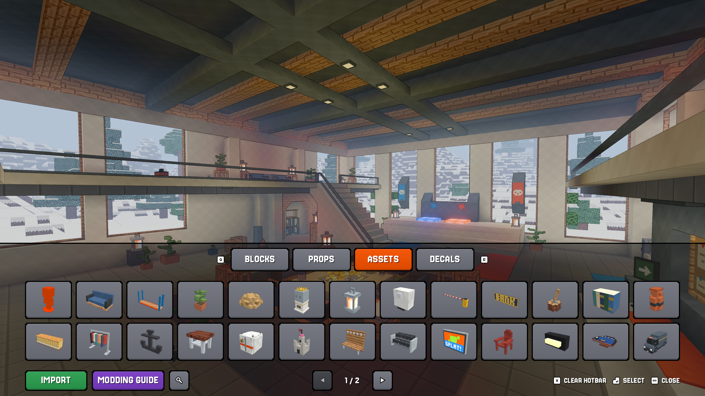
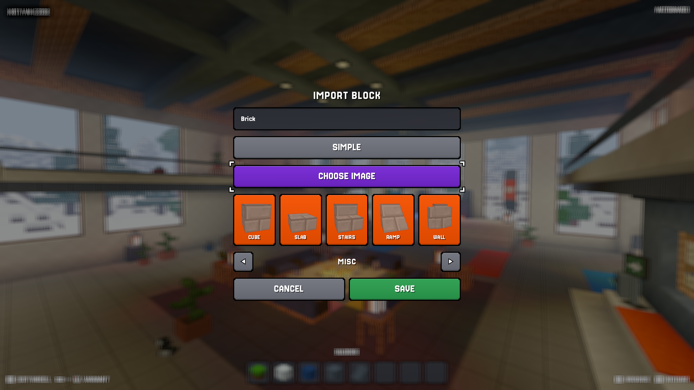
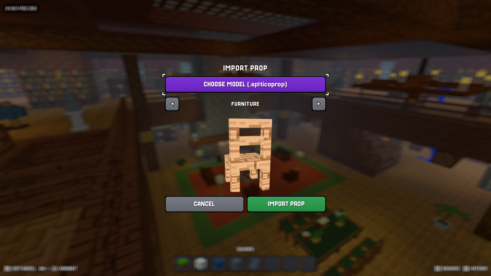
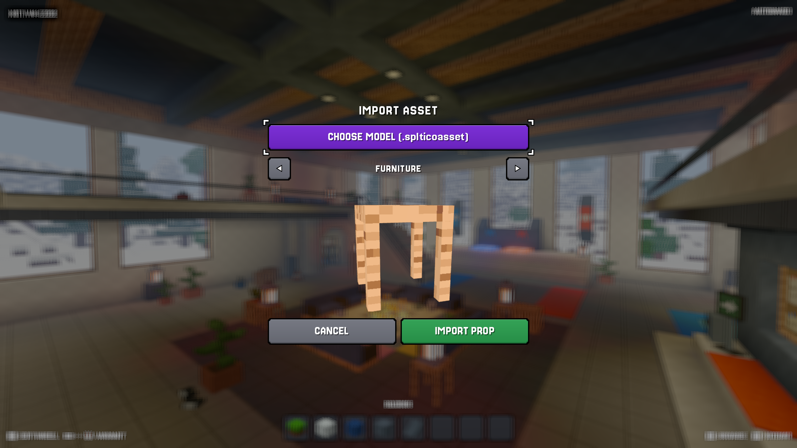
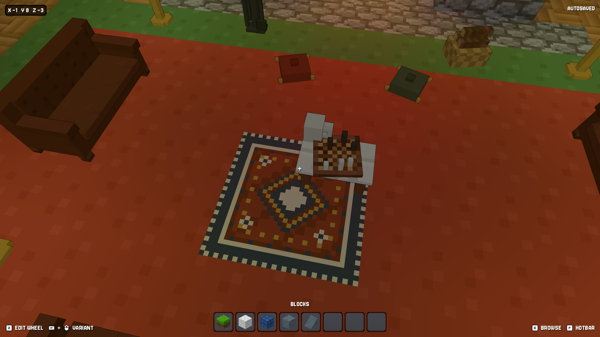
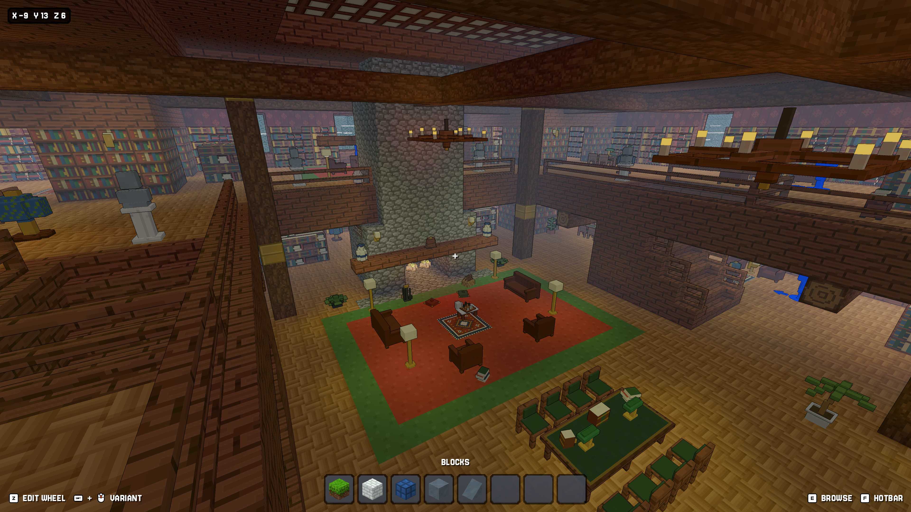
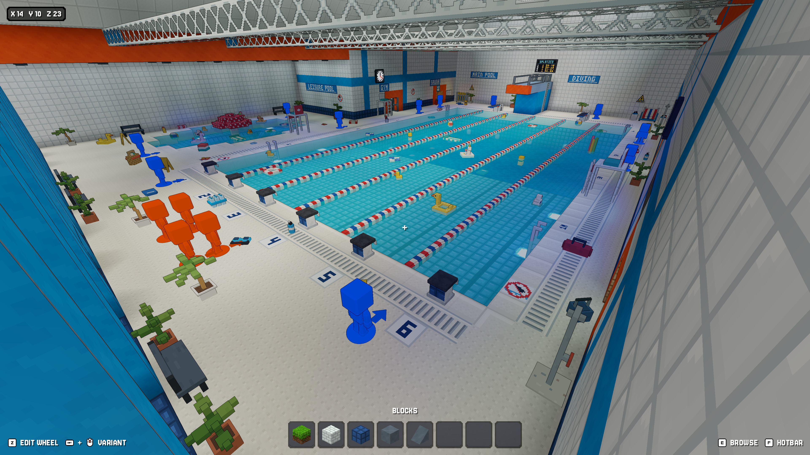

BUY ON STEAM
BUY ON STEAMBUILD WITH BLOCKS
Shape rooms, floors, pools, and entire worlds.
MAP EDITOR / STEAM WORKSHOP
Build a voxel world. Import your own creations.
Make new hiding spots for your friends.

Shape rooms, floors, pools, and entire worlds.
Place furniture, decorations, and plenty of distractions.
Change the sky, lighting, fog, and weather.
Place spawns and test your hiding spots in the game.
CUSTOM IMPORTS
New textures. New props. Your own scenery.
Bring it all into the map editor.

Import 16×16 textures. Build with cubes, slabs, stairs, ramps, and walls.
Separate top, side, and bottom textures.

Make objects players can disguise as. Import your Blockbench creations and hide among them.
Optional idle and movement animations.

Add your own furniture, plants, and scenery. Build out the world around the hunt.
Add seats, glowing textures, and collision settings.

Import 16×16 images for signs, posters, arrows, and surface details.
Place on block faces and rotate to fit.

